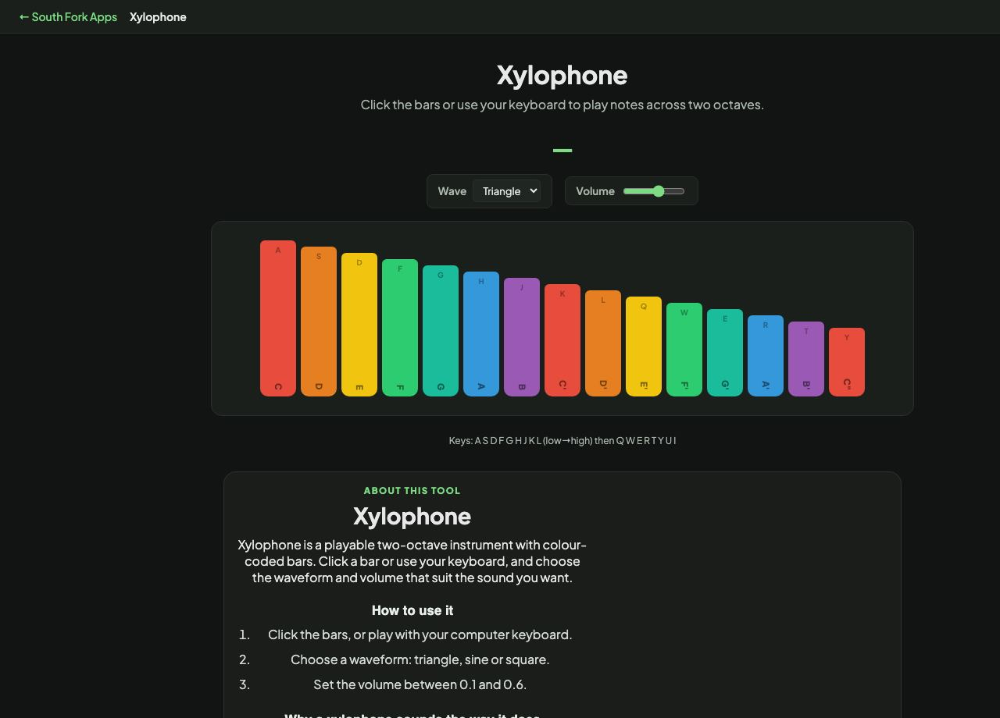

Xylophone
Click the bars or use your keyboard to play notes across two octaves.
Keys: A S D F G H J K L (low→high) then Q W E R T Y U I
Xylophone
Playable virtual xylophone in your browser. Click colorful bars to play notes across two octaves. Use your keyboard for fast playing. Free online xylophone.
Xylophone is a free browser-based tool from South Fork Apps. There's nothing to install, no account to create, and no usage limit. Open the page, do the work, and move on.
How it works
- Open Xylophone in any modern browser on desktop or mobile.
- Enter or paste your input into the tool's main field.
- Adjust any options shown on the page to match what you need.
- Copy or download the result and continue with your work.
Why use a browser tool
Browser tools beat installable apps when the job is small. You don't have to manage updates, sign in, or wait for a heavy program to load. Xylophone runs entirely in your browser. Your input never leaves your device, no analytics watch what you type, and the page stops working the moment you close the tab.
Privacy and data
South Fork Apps tools process everything client-side in JavaScript. No server sees your data. Nothing is stored, logged, or sent anywhere. If you're working with sensitive content, you can verify by opening the page once, disconnecting from the internet, and watching Xylophone keep working.
